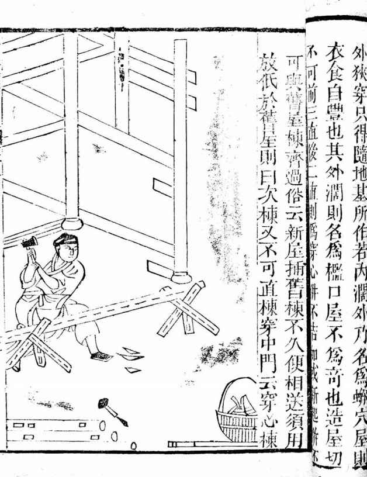

也许，对一个新登基的皇帝不该使用这样的词汇，尤其在至今仍未从对皇帝的习惯性敬畏心理中走出来的中国。
但是，我并未试图用这个词去贬低朱由校，或者谴责他，或者暗示不应该由他接替皇帝的位子。朱由校的继位，完全合法，那座金銮殿属于他，没有人比他的血统和资格更加纯正。
问题不在这里。
我此刻想到“沐猴而冠”这个词，是被它的幽默和喜剧色彩所打动。它描绘出一种最不和谐、最不相称、对彼此都颇为勉强苦恼的情形。在古人言，“冠”是一件极庄重、极尊严的事物，例如，脱离幼稚而成人要行冠礼，此前则只好称“弱冠之年”；孔子高徒子路，“君子死，冠不免”[25]，认为如果是君子，死没什么，头上的冠是不能丢落的。然而，猴却是一切动物里，最不耐庄重与尊严的一员。把极庄重、极尊严的事实，加之于极不耐庄重与尊严的东西，这样的反差，已到极致；而且还“沐”而“冠”，先把猴子洗得干干净净，以便它看起来不那么邋遢。想出这词儿的，是太史公司马迁——他在《史记•项羽本纪》里说：“人言楚人沐猴而冠耳，果然。”——也只有他这样的天才，才能在思想中凝聚如此透骨的幽默吧。
朱由校生于万历三十三年，公历1605年。很遗憾，他不属猴。这年出生的人，属相是蛇，但由此可见，人的性格与其属相实无关系。从诸多方面看，朱由校更适宜属猴。他以贪玩著名，太监刘若愚亲自观察，给了他生性“不喜静坐”的描述[26]。尤其喜欢上树掏鸟窝，一次树枝折断，掉下来，几乎遇险。他并非只是性格上有猴性，命运亦复如是。做皇帝整个七年间，他基本被魏忠贤、客氏这对狗男女当猴耍，本人也极其配合、听话，任由摆布，以至连自己老婆、孩子亦不保——非不能保，竟然是置之不保，完全不可理喻。
人与猴是近亲。人类学意义上，形貌若猴的“毛孩”，被称为“返祖现象”。我们的天启皇帝朱由校先生，虽非“毛孩”，却发生“返祖现象”。他的“返祖”，不是长出毛茸茸的脸蛋儿与四肢，而是精神上重返“至愚至昧”[27]的原始状态。
何出此言？说来无人肯信：十七世纪二十年代的“中国第一人”，几乎是个白丁！我们由礼科给事中亓诗教给朱翊钧的一道奏折得知，直到万历四十七年（1619年，也即朱由校登基的前一年）三月，年已十五、作为皇太孙的他，自打从娘胎出来，迄今竟然未“授一书、识一字”！奏折原文：
皇上（朱翊钧）御极之初，日讲不辍，经筵时御；为何因循至于今日，竟视东宫（朱常洛）如漫不相关之人？视东宫讲学如漠不切己之事？且不惟东宫也，皇长孙（朱由校）十有五岁矣，亦竟不使授一书、识一字。我祖宗朝有此家法否？
如非事实，丌诗教绝不敢这样理直气壮地提出来。况且还有旁证。《明史》载，早此六年，孙慎行（时任礼部右侍郎）也曾指出：“皇长孙九龄未就外傅。”[28]——即，朱由校已经九岁，却还从来没有给他请过老师。
鲁迅曾说“人生识字糊涂始”，毛泽东曾说“知识越多越反动”。鲁句“翻造”苏东坡“人生识字忧患始”，来调侃“许多白话文却连‘明白如话’也没有做到”[29]；毛句，则意在推行“文化革命”。其实，人当然不会因为识字而糊涂起来，也当然不会知识越少越进步。鲁、毛两位，自己没有少识字、少读书，都一肚皮学问；对他们的愤世语，是不可以当真的。朱由校以他的一生，站出来作证：不识字，人必定糊涂透顶；缺乏智识却龙袍在身，也必带来很多反动的后果。
朱由校糊涂到什么地步呢？简单来说：颠倒黑白，敌我不分，把坏人当好人，把好人当坏人。
在他登基之前，出过一桩事，史称“移宫”，列有名的明末宫庭三大案之一（另两案发生在朱常洛身上，一为“梃击”，一为“红丸”，前面已有交代）。所谓“宫”，指天子所居的乾清宫。
朱常洛既死，朱由校接着当皇帝，乾清宫理应由他居住。但朱常洛的宠姬李选侍却赖在那里不走，她提出的要求是得到皇后的封号，而一些大臣则认为她胃口远不止此，怀疑她有意垂帘听政。大家起来跟李选侍斗争，费了九牛二虎之力，才使她搬出乾清宫，这样，朱由校才得以正位。京戏里有一出《二进宫》，据说即以此事为本，不过情节上却另加虚构，有很大变动。
李选侍的恶劣还不止霸占乾清宫这一件事，说起来，她对朱由校实有杀母之仇。朱由校跟他父亲一样，也是普通宫女所生，很巧，这宫女也姓王。李选侍在朱常洛跟前一直受宠，但她自己只生有一女，对生育了当时的皇长孙朱由校的王氏，妒恨交加，就运用自己的被宠，对王氏百般虐待，而朱常洛似乎也听之任之。朱由校终于即位之后，曾在上谕中多次声讨李选侍的罪行：
朕昔幼冲时，皇考选侍李氏，恃宠屡行气殴圣母（指其生母王氏），以致（王氏）怀愤在心，成疾崩逝。使朕有冤难伸，惟抱终天之痛。[30]
（李氏）前因殴崩圣母，自度有罪，每使宫人窥伺，不令朕与圣母旧侍言，有辄捕去。[31]
除了杀母之仇，李选侍对朱由校本人，一贯也不放在眼里，呵来叱去。移宫之前，朱由校一度被李氏控制，形如挟持，“挟朕躬使传封皇后，复用手推朕，向大臣痏（流血之创伤曰“痏”）颜口传，至今尚含差赧”[32]。
在整个危机中，有两个人立了大功。一是以兵部给事中而被委以顾命重任的杨涟，一是太监王安。当时朱由校为李氏控制，杨涟首倡应该当机立断，强行解救朱由校。王安则是从李氏那里亲手夺过朱由校、“强抱持以出”[33]的那个人。救出朱由校，“诸臣即叩首呼‘万岁’”，首次确认朱由校的皇帝身份，随即由王安保护，内阁成员刘一燝、英国公张惟贤分扶左右，去文华殿暂御，李选侍派人追来，拉拉扯扯想把他夺回去，是杨涟厉声喝退，君臣乃得于文华殿商议登极之事。李选侍赖乾清宫不走，又是杨涟和王安坚持不懈施压，迫其迁往哕鸾宫。
李选侍最得力的走狗叫李进忠，他就是日后改名为“魏忠贤”的不可一世的大太监。他当时把宝押在李选侍身上，看好她能够挟幼主而听政，所以坚持要李选侍抓往朱由校不松手。怎奈女人家见识不到这一层，也因胆怯而动摇，朱由校以此脱身。但“既许复悔，又使李进忠再三趣（催促）回”。其实这句话应该写作“在李进忠指使下，李选侍再三趣回朱由校”。“及朕至乾清宫丹墀，进忠等犹牵朕衣不释。甫至前宫门，又数数遣人令朕还，毋御文华殿也。”[34]由这些叙述，很清楚地看到，魏忠贤（李进忠）是帮助李选侍挟持朱由校的主谋。
实际上，“移宫案”带有宫庭政变的色彩，一切只差在毫厘之间——设若李选侍坚定听从魏忠贤主张，不放走朱由校，设若杨涟、王安不挺身而出夺走朱由校，使其摆脱李党的控制，将来朱由校这个皇帝怎样一个当法，很成问题，极可能是一个“儿皇帝”。杨涟、王安果断出手，与群臣同心协力，紧急关头“救驾”，一举扭转局面，可以说朱由校顺利即位，多拜二人之所赐。然而事过之后，这两个帮助他取得帝位的功臣，一个被他发往南海子充当净军，不久被魏忠贤害死于该处，另一个先是被赶回故里，后又在魏忠贤针对东林党人发动的大规模清洗中，投入诏狱，折磨致死。相反，曾“殴崩圣母”、“挟圣躬”的李选侍，以及助纣为虐的魏忠贤，这两人论理与朱由校有不共戴天之仇，却作了恶而未得任何惩罚。李选侍安然在哕鸾宫得到奉养，魏忠贤转而通过交好朱由校乳母客氏，成为朱由校最受信赖的人。
如此黑白颠倒，根本无法以常理揆度。我们并未要求朱由校有正义感，从普遍的善恶标准在正邪之间做出正确取舍。我们对他不过是从私利角度设想，谁在维护他的利益，谁又损坏和伤害着他，这总该能够分清。而事实上，他的选择竟是，与为其效命的人反目，包容直至亲近欺辱自己母亲、意欲挟持和禁锢他的敌人。这样一个人，全然不知好歹，用里巷之间的说法，就是缺心眼儿。但是原因何在？朱由校其实不痴不傻，从他擅长的木工漆活来看，简直应该算是心灵手巧。想来想去，他的缺心眼儿，只能归结到迟迟不曾接受教育，不识字、不读书。但凡读过一点书，总会有些识见，分得清眼前利益和长远利益，断得明敌我亲仇。
从其一生看，朱由校对于人生人性，基本懵懂无知，见地不及初中生。他很容易被蒙骗，甚至无须蒙骗，只要哄他一时高兴，任取任夺——江山社稷无所谓，连老婆孩子的性命也无所谓。他天赋的聪明可以打高分，而后天的心智成熟度则仅相当于幼稚园孩童。这笔账要记在祖父朱翊钧身上。这位万历皇帝不知何故，对儿子朱常洛、孙子朱由校一律采取“愚民政策”，群臣为常洛由校父子争取出阁读书权利，磨破嘴皮，朱翊钧则能拖就拖，好像唯恐他们的智力得到开发，好像并不担心将来他们做了皇帝，被人欺负耍弄。
总之，朱由校以天潢贵胄，居然有如出身赤贫的农家子，直到成人，硬是没有机会进入学堂。他的才具，全靠自己开发——在野玩中成长。
有明一代，整个朱家皇族出过两位天才[35]。一位是郑王朱厚烷嫡长子朱载堉，此人于历法、数学、地理、物理、哲学、文学、舞蹈无所不通，尤其音乐乐理上的造诣、成就，傲视前人，据说他是世界上最早解决了十二平均律的数理和计算的人。另一个天才，便是朱由校。朱由校的天才，表现在工程学方面，倘若生在当代并循正规途径培养，以他的天赋，跻身国家工程院院士之列，绝非难事。
自幼没有老师和功课约束，朱由校便有大把时间玩耍，除了寻常的爬树、骑马、溜冰、荡秋千之类，朱由校也得以在野玩之际，邂逅最适宜他天性的喜好——宫中屡有造作修葺，由校路过或于近处玩耍时得见，每驻足旁观，兴趣盎然。久而久之，心慕手追，找来工具自己摆弄。这一摆弄不打紧，天才就此被发现。他无师自通，仅因观摩便心领神会，不仅诸般技艺尽数掌握，而且水平极高：“斧锯凿削，引绳度木，运斤成风”“虽巧匠不能及”“又好油漆，凡手用器具，皆自为之”。[36]
明熹宗朱由校。
也即天启皇帝。他可谓工程技术天才，同时却又是一位文盲，长到十五岁，还未“授一书、识一字”。明代宫廷的溷错，程度没有超过他的。

《鲁班经》。
成书于明代的木作行业书。这才是朱由校所倾心的事业，然而，他却生来注定去当皇帝。
举凡泥瓦工、木工、漆工、雕刻工，他无不精通。但他的才具岂止单单是能工巧匠，更长于工程、机械的巧思设计，潜心琢磨并亲手完成的某些作品，虽然只是“玩艺儿”，无关国计民生，对文明进步也毫无用途，但就匠心独运、巧夺天工而言，显示了不逊于瓦特、詹天佑式的潜质。例如他曾以水为动力，运用力学原理和复杂的机械装置，设计出一种机动水戏：“用大木桶、大铜缸之类，凿孔创机、启闭灌输。或涌泻如喷珠，或澌流如瀑布。或使伏机于下，借水力冲拥圆木球如核桃大者。于水涌之大小，盘旋宛转。随高随下、久而不坠。”他常有这类制作，“皆自运巧思，出人意表。”[37]
他可不是零敲碎打，小打小闹。当时宫里目击者称，朱由校“性好营建”，领着十来个太监，颇具规模地盖房子，亲自设计，亲自施工，亲任监理，把大内变成实验他工程师、建筑家、能工巧匠和包工头理想的工地。“回廊曲室，皆手操斧锯为之”，没日没夜地干，建成后特满足，很有成就感，高兴劲儿一过，又推倒重来，不断改进、折腾，乐而不疲。（“朝夕营造，成而喜，喜不久而弃，弃而又成，不厌倦也。”[38]）
这已超乎嬉乐之上。我相信，他在其中一定感受到创造力的极大释放；单独看，他的举止和态度是严肃的、专注的、执著的，与任何沉浸在自己事业中的工作者没有分别。“每营造得意，即膳饮可亡，寒暑罔觉。”[39]干活的时候，投入程度跟民间热诚忘我的劳动者一般无二，“当其执器奏能，解衣盘礡。”[40]
倘使那时有清华大学或同济大学可入，朱由校的一生当有辉煌前景，将来修水库、建大桥、造巨厦，广阔天地大有作为，才智尽得发挥，而且一定可以跻身“中华英才”。读他的故事，我曾设想对他的最好安排，是类似于洛克菲勒基金会那样的组织，给他提供一大笔钱、一间实验室，让他随着性子去鼓捣随便一些什么玩意儿，他自己将万分快乐，社会多半也能享受到其聪明才智创造出来的成果。很遗憾，他注定去当皇帝。但是，当皇帝，我们实在不敢恭维，只能称之“沐猴而冠”。
这就不仅他自己难伸其志，整个国家也跟着陷于灾难。他自己所理解的本职工作，是技术专家兼熟练工，而在其他所有人眼里，他却只能是国家元首。两种认识之间，错位太大。所造成的情形则是，朱由校异常认真地对待自己所认定的“本职工作”，对皇帝职责却敷衍了事、漫不经心。“或有紧要本章，奏事者在侧，一边经营鄙事，一边倾耳且听之。毕即吩咐曰：‘你们用心去行，我已知道了。’”[41]若频频受到打扰，难免要不耐烦的；魏忠贤利用这一点，渐渐将批硃权抓到手里。
他总共在位七年。这七年的皇帝，被他当得一塌糊涂，内政外务，无一事处置算是对的。实际也谈不上什么处置，因为身边完全被奸人所包围，他又是一个猪油蒙心、不知好歹、对是非毫无判断力的人，因此奸人对他说如此如此，他就这般这般。统治期内，外患、阉祸、党争、叛乱四大危机，同时发作，而且搅作一团，你中有我，我中有你，虽说明朝气数已尽，然若非赶上如此少见的“愚”皇帝，多少尚存缓解余地。
可是却又怎样指望这样一个人呢？他糊涂到自己的妃嫔被人暗中搞死都不会生疑的地步。他不是没有后代，生过五个孩子，三男二女，可谁能相信，竟没一个活下来，任何稍有责任心的父亲，都不会容许发生孩子接二连三死掉这样的事情；借此一端也可想象，天启间宫庭管理何等松懈散乱，人们都晓得皇帝是个糊涂虫，对于各自职守均抱玩忽态度，这些皇子皇女的死因基本都起于照管不周，有的事发竟十分可笑，比如，因为内操放炮受了吓惊而死、被炭气所熏中毒而死等。《酌中志》说：“中宫张娘娘等，凡诞皇子三位，皇女二位，皆保卫不得法，以致婴年薨夭，良可悲痛。”结论是“保卫不得法”。其实，那时候婴幼儿并不难养活，刘若愚也感到很奇怪，所以接下去说：“累臣（罪臣，刘当时被系狱中）于天启丁卯冬谪南之际，见沿途田里间孩儿多憨憨壮壮，易得存养。”[42]
朱由校自己的死，也很可笑：天启五年五月十八日（1625年6月22日），他带着两名宦官在西苑（今中南海）划船玩，水面忽然狂风大作（估计是雷阵雨即将到来，这季节，北京常有暴烈天气），船翻，落水，被救，病倒。论理，旧历五月、阳历6月，北京已经很热，此时落水一次不值什么，不致给健康造成大问题。可是很怪，朱由校的病居然就此缠绵下去，病根始终未除，两年后，突然转重，从五月初捱到八月二十二日，顺顺当当死掉了，年方二十三岁。
如果我们不把朱由校当皇帝，只当一个男人看，那么，平心论这男人一辈子很失败、很不像个男人、窝囊透了，到头来连老婆孩子都保不住，自己也是风一吹就倒、对疾病毫无抵抗力。对于他，除了作为一个工程技术天才的早逝令人惋惜以外，我们没有太多可以表示的。
天启时代中国社会的舞台，虽然皇帝是朱由校，主角却是另外一些人，重要情节也都发生在他们之间；前头约略提到而未详述的故事，下面会随这些主角的出场，一一细说。